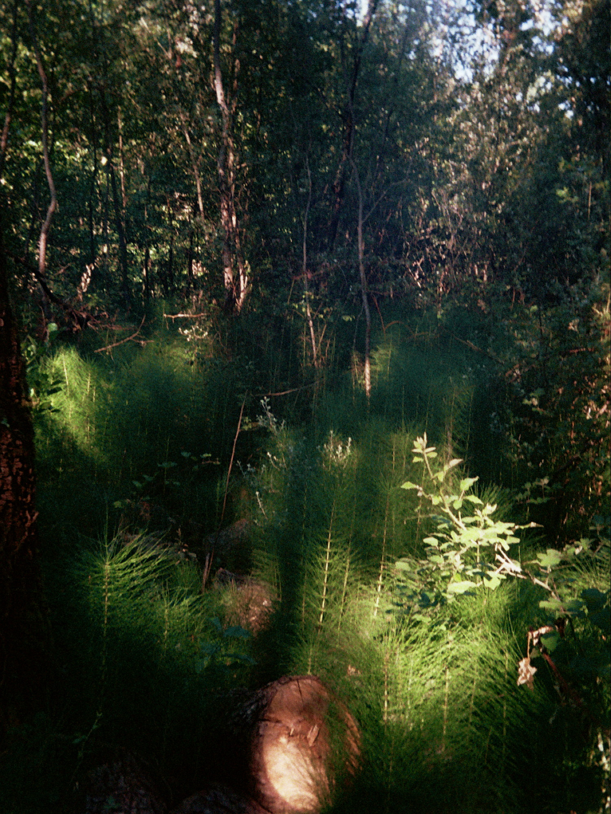

Ode aan de heermoes
Medicinale planten in de wijngaard (1)
In het Carboon, toen de aarde nog bestond uit uitgestrekte moerassen en reusachtige wouden, lang voordat de eerste dinosauriërs over de aarde zwierven, groeiden de voorouders van de heermoes uit tot boomachtige planten met toppen die tot dertig meter hoog reikten. Deze zomer, tijdens één van mijn wandelingen in de Luberon nabij het dorp Rustrel, aan de rand van een bos, spotte ik de heermoes, weggestoken in een schaduwpartij, waarbij enkele dromerige zonnestralen de heldergroene kleur van de plant naar voren brachten.

Screenshot uit Les Raisins de la Mort (1978), regie Jean Rollin.
Klein, amper 50 centimeter groot, overschaduwd door het bladerdak van het bos, staat het kruid waarvan de verre verwanten ooit uitgroeiden tot gigantische planten die hoger reikten dan de bomen die haar nu omringen. Klein, maar rijk aan medicinale stoffen die haar al eeuwenlang een plaats geven in de kruidengeneeskunde, waardoor het misschien geen toeval was dat ik, toen ik later in een eeuwenoud botanisch boek van de Nederlandse botanicus en arts Abraham Munting bladerde, de plant opnieuw tegenkwam. In Naauwkeurige beschryving der aardgewassen (1680–1682) las ik hoe Munting de krachten van de heermoes beschreef. Na wat wennen aan het zeventiende-eeuwse Nederlands viel vooral op hoeveel verschillende krachten hij aan de plant toeschreef:
“In Wijn gezoden, en daar van gedronken; of het uytgeparste Nat met Wijn gebruykt, of ook de bladeren gedroogt, gepulverizeert, en daar van een Drachma met Wijn ingenomen, stopt allerley Loop en Vloeden des Ligchaams: helpt de geene die Bloed spouwen en bloed pissen, drie Leepelen van het Zap driemaal ieder dag gebruykt. Geneest ook een verouderde Hoest, de pijn der Darmen; de Engborstigheyd, de roode Loop; de inwendige Breuken en Gescheurdheyd; het zweeren van het Gedarmt, der Nieren en Blaas. Doed sterk wateren.”
In een tijd waarin wijn vaak betrouwbaarder was dan het beschikbare drinkwater, liet Munting de heermoes in wijn trekken als medicinaal middel. Een wijnmaker uit de Beaujolais vertelde me ooit hoe hij heermoes een dag in water liet trekken en het aftreksel vervolgens gebruikte om zijn wijnranken te benevelen. Een bijna alchemistisch beeld drong zich aan me op, zeker toen hij vertelde dat dit net voor de volle maan gebeurde, wanneer de maan volgens de biodynamische traditie haar sterkste invloed op het waterige element zou hebben. Hij vertelde hoe schimmels op vochtige momenten vanuit de bodem omhoog kunnen trekken, zich vastzetten op de bladeren en de wijnstok langzaam aantasten. De heermoes zou volgens hem helpen om die kracht opnieuw naar beneden te richten, om de schimmels terug te brengen naar de aarde waar ze thuishoren: in de grond.
Zowel Munting als de wijnmaker keerde eenzelfde gedachte terug: dat heermoes, bij de mens en bij de plant, werd gezien als een middel om een verstoord evenwicht te herstellen. In mijn boekenkast haalde ik mijn hedendaagse kruidenboeken tevoorschijn om de heermoes verder te bestuderen, waarin, in tegenstelling tot Munting, die de werking van de plant beschreef zonder haar samenstelling te kennen, ook haar chemische bestanddelen werden beschreven die deze werking helpen verklaren. Heermoes behoort zo tot de planten met een uitzonderlijk hoog gehalte aan kiezelzuur, een stof die niet alleen de plant zelf stevigheid geeft, maar ook voorkomt in de structuren die mens en dier hun vorm geven: botten, pezen, bindweefsel, huid, haar en nagels. Vandaar dat Heermoes vaak wordt gebruikt bij klachten waarbij deze structuren verzwakken, zoals broze nagels, haaruitval of problemen met gewrichten en bindweefsel.
Terwijl ik las over het gebruik van heermoes bij het versterken van het haar, bracht een ietwat vreemde associatie me terug bij de wijnstok. In mijn verbeelding verscheen de plantenwereld even als het haar van de aarde zelf, wortelend in haar huid, waardoor ik me even waande in de tijden van figuren als Da Vinci, Kepler en Goethe die zochten naar de verborgen verbanden tussen mens, aarde en kosmos. Een wereld waarin rivieren als aders door het landschap stroomden, waarin de aarde niet werd gezien als een levensloze planeet waarop het leven slechts ten tonele verscheen, maar zelf als iets levends werd beschouwd. Misschien was het niet zo vreemd dat oude natuurfilosofen zulke verbanden zochten; ook wij bestaan immers uit dezelfde stoffen die ooit in sterren werden gevormd. De heermoes die onder het bos groeit, de wijnstok die zich in de aarde vastzet en de mens die ernaar kijkt, zijn verschillende verschijningsvormen van hetzelfde oude materiaal.